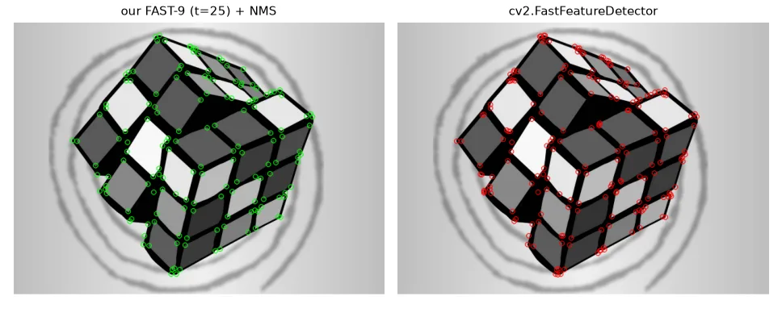
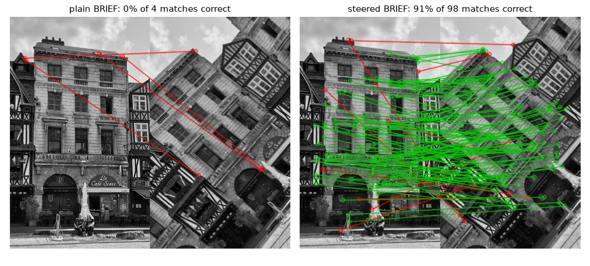
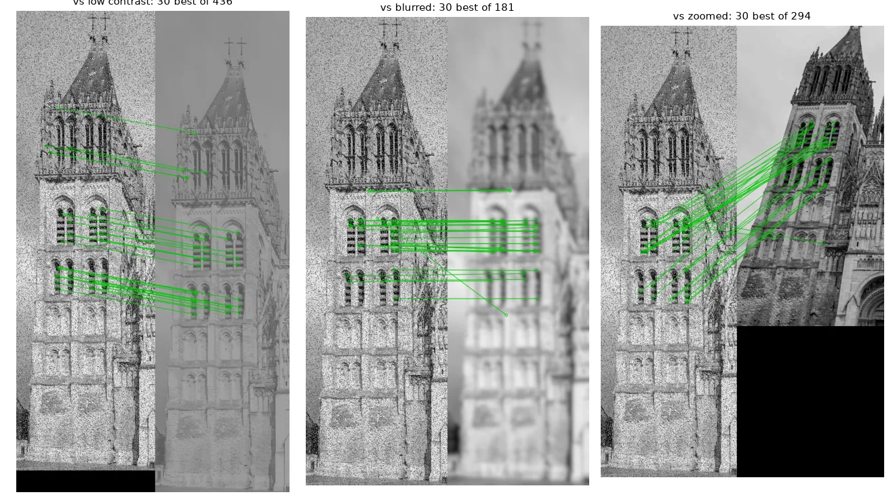
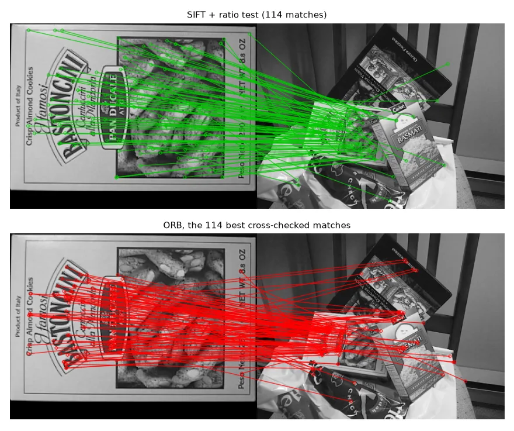
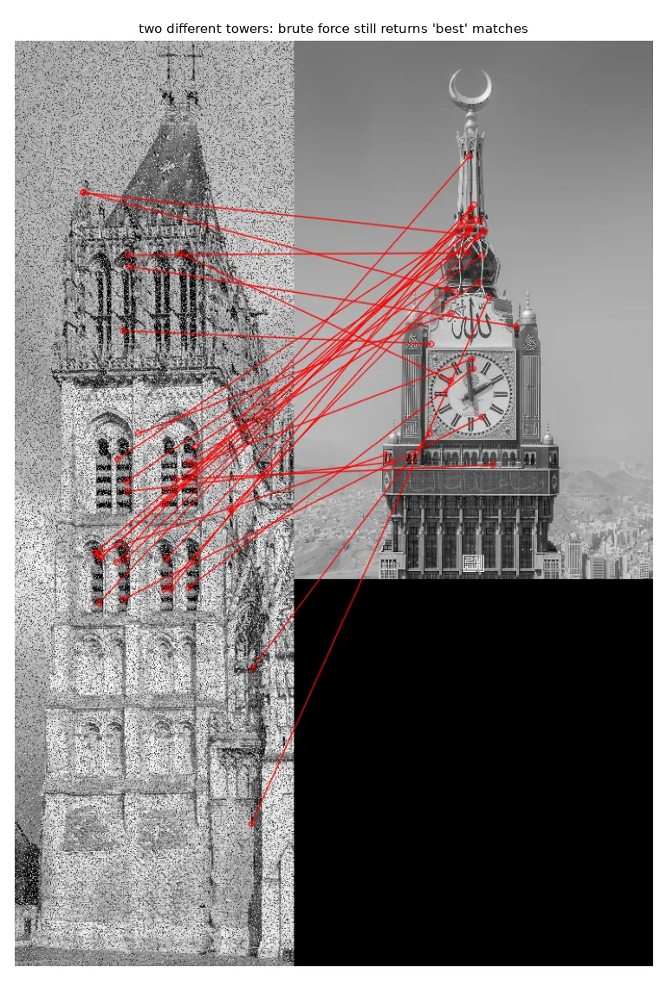

Detector + descriptor#
Matching two images of the same scene from different viewpoints needs two things:
- a detector that finds the same physical points in both images (repeatability), and
- a descriptor, a vector that summarises the patch around each point so that the same point gives similar vectors, even if the image is rotated, scaled, blurred or darker.
ORB (Rublee et al., 2011) — "Oriented FAST and Rotated BRIEF" — is the fast, free, binary answer, and the feature behind ORB-SLAM (lesson 17). We build a small version of it.
FAST#
FAST looks at the 16 pixels on a circle of radius 3 around a candidate \(p\). It is a corner if \(n\) contiguous circle pixels are all brighter than \(I_p + t\) or all darker than \(I_p - t\) (\(n = 9\) for FAST-9, 12 in the original paper).
# Bresenham circle of radius 3 around the candidate pixel: 16 (dx, dy) offsets, in order.
CIRCLE = [(0, -3), (1, -3), (2, -2), (3, -1), (3, 0), (3, 1), (2, 2), (1, 3),
(0, 3), (-1, 3), (-2, 2), (-3, 1), (-3, 0), (-3, -1), (-2, -2), (-1, -3)]
The original version of my implementation tested each pixel in a Python loop, which takes seconds per image. Vectorised, the 16 circle pixels become 16 shifted copies of the image, and "\(n\) contiguous" becomes an AND over \(n\) consecutive copies, for each of the 16 starting positions (wrapping around):
def fast_score_map(img, t=20, n=9):
"""FAST-n segment test for every pixel at once.
A pixel p is a corner if n *contiguous* circle pixels are all brighter than p + t
or all darker than p - t. Returns a score map (0 = not a corner).
"""
f = img.astype(np.int16)
h, w = f.shape
pad = np.pad(f, 3, mode="edge")
ring = np.stack([pad[3 + dy:3 + dy + h, 3 + dx:3 + dx + w] for dx, dy in CIRCLE]) # 16 x h x w
brighter = ring > f + t
darker = ring < f - t
def has_arc(flags):
# circular: does any run of n consecutive True exist among the 16?
ext = np.concatenate([flags, flags[:n - 1]]) # wrap around
found = np.zeros((h, w), bool)
for start in range(16):
found |= np.all(ext[start:start + n], axis=0)
return found
corner = has_arc(brighter) | has_arc(darker)
score = np.abs(ring - f).sum(axis=0) # how strongly the ring differs from p
score[~corner] = 0
score[:3], score[-3:], score[:, :3], score[:, -3:] = 0, 0, 0, 0
return score
def nms(score, radius=3):
"""Keep pixels that are the maximum of their (2r+1)^2 neighbourhood."""
local_max = cv2.dilate(score.astype(np.float32), np.ones((2 * radius + 1,) * 2))
ys, xs = np.nonzero((score > 0) & (score >= local_max))
return np.stack([xs, ys], axis=1)

Orientation: the intensity centroid#
FAST says where but not which way. ORB computes the centroid of the patch intensities with image moments; the vector from the keypoint to the centroid defines its angle:
def orientation(img, x, y, radius=15):
"""Intensity centroid (oFAST): the angle from the keypoint to the patch's centre of mass."""
patch = img[y - radius:y + radius + 1, x - radius:x + radius + 1].astype(np.float32)
dy, dx = np.mgrid[-radius:radius + 1, -radius:radius + 1]
disk = dx ** 2 + dy ** 2 <= radius ** 2 # circular patch: rotation invariant
m10 = np.sum(dx * patch * disk)
m01 = np.sum(dy * patch * disk)
return np.arctan2(m01, m10)
The patch is a disc, so rotating the image rotates the centroid by the same angle.
BRIEF: a descriptor made of comparisons#
BRIEF picks 256 random pairs of points \((\mathbf{p}_i, \mathbf{q}_i)\) inside the (smoothed) patch, fixed once and for all, and sets bit \(i\) to \([I(\mathbf{p}_i) < I(\mathbf{q}_i)]\). The descriptor is 32 bytes, and two descriptors are compared with the Hamming distance — the number of different bits, a XOR and a popcount. That is why ORB matching is so fast.
"Steered" BRIEF rotates the sampling pattern by the keypoint's angle before sampling:
rng = np.random.default_rng(42)
PAIRS = np.clip(rng.normal(0, 31 / 5, size=(256, 4)), -13, 13).round() # (x1, y1, x2, y2) per bit
def brief(img, x, y, angle=None):
"""256-bit binary descriptor: bit i = I(p1_i) < I(p2_i), on a smoothed image.
With an angle, the sampling pattern is rotated first ("steered" BRIEF, as in ORB)."""
pts = PAIRS.reshape(-1, 2)
if angle is not None:
c, s = np.cos(angle), np.sin(angle)
pts = pts @ np.array([[c, s], [-s, c]]) # rotate every sample point
pts = np.round(pts).astype(int)
vals = img[y + pts[:, 1], x + pts[:, 0]].reshape(-1, 2)
bits = (vals[:, 0] < vals[:, 1]).astype(np.uint8)
return np.packbits(bits) # 32 bytes
def hamming(a, b):
return int(np.unpackbits(a ^ b).sum()) # number of different bits
Does the orientation matter? Measure it#
We rotate an image by a known 50° so that we can check every match against the ground truth:
a = U.imread("features/bat.jpg", cv2.IMREAD_GRAYSCALE)
h, w = a.shape
M = cv2.getRotationMatrix2D((w / 2, h / 2), 50, 1.0) # known ground truth: 50 degree rotation
b = cv2.warpAffine(a, M, (w, h), borderMode=cv2.BORDER_REFLECT)
def precision(pa, pb, matches, tol=3.0):
"""Fraction of matches that land where the known rotation says they should."""
if not matches:
return 0.0
src = np.array([pa[i] for i, _ in matches], np.float32)
dst = np.array([pb[j] for _, j in matches], np.float32)
predicted = src @ M[:, :2].T + M[:, 2]
return float(np.mean(np.linalg.norm(predicted - dst, axis=1) < tol))
mini-ORB steer=False: 4 mutual matches, 0% correct
mini-ORB steer=True: 98 mutual matches, 91% correct

ORB in OpenCV#
orb = cv2.ORB_create(nfeatures=1000)
bf = cv2.BFMatcher(cv2.NORM_HAMMING, crossCheck=True) # Hamming: XOR + popcount
def orb_matches(img1, img2):
kp1, des1 = orb.detectAndCompute(img1, None)
kp2, des2 = orb.detectAndCompute(img2, None)
matches = sorted(bf.match(des1, des2), key=lambda m: m.distance) # best first
return kp1, kp2, matches
crossCheck=True keeps a match only if A's best match is B and B's best match is A. Sorting by distance puts the most reliable first.

SIFT and the ratio test#
SIFT (Lowe, 2004) detects blobs as extrema of a difference of Gaussians across scales (lesson 06) — so it knows each keypoint's scale — and describes them with 128 floats: histograms of gradient orientations in a 4×4 grid. It is slower than ORB but more distinctive and robust to scale.
With float descriptors we use the Euclidean distance and a FLANN k-d tree. Instead of a fixed threshold, Lowe's ratio test compares the best match with the second best: a correct match is much closer than any other candidate, while an ambiguous one (a repeated window, a texture) is not.
sift = cv2.SIFT_create()
flann = cv2.FlannBasedMatcher(dict(algorithm=1, trees=5), dict(checks=50)) # KD-tree
def sift_matches(img1, img2, ratio=0.75):
kp1, des1 = sift.detectAndCompute(img1, None)
kp2, des2 = sift.detectAndCompute(img2, None)
knn = flann.knnMatch(des1, des2, k=2) # two nearest neighbours per descriptor
# Lowe's ratio test: keep a match only if it is clearly better than the runner-up
good = [m for m, n in knn if m.distance < ratio * n.distance]
return kp1, kp2, good
SIFT box vs scene: 1888 nearest neighbours, 114 survive the ratio test

Matches are not proof#

Descriptor distance alone cannot tell you whether two images show the same thing. The missing ingredient is geometry: correct matches must all agree on one transformation between the images. That is the next lesson.
Exercises#
- Plot the fraction of correct matches of steered vs plain BRIEF for rotations from 0° to 180°.
- Add the ratio test to the ORB matcher (
bf = cv2.BFMatcher(cv2.NORM_HAMMING)+knnMatch(k=2)). How many of the 283 false tower matches survive? - Replace the random BRIEF pairs by pairs sampled from a uniform distribution. Does accuracy change?